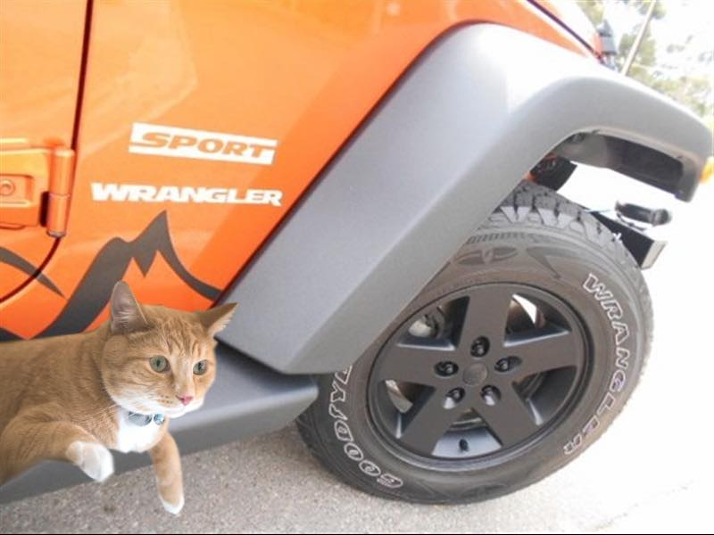

After Dexter got a job he decided to buy an orange Jeep Wrangler; the official name of the color is mango tango. Why orange? Because it's his favourite color. He likes to drive in the highway, over medians, green areas and splash puddles when it rains.
He has the most fun with the Jeep during winter because he can snow drift in parking lots. But he also likes to drive in the summer and take trips to the mountains. But since he is cat, his friends have to make sure he doesn't take a nap, starts kneading at the wheel or any other cat activity that could distract him from driving.
